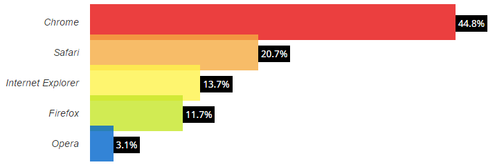
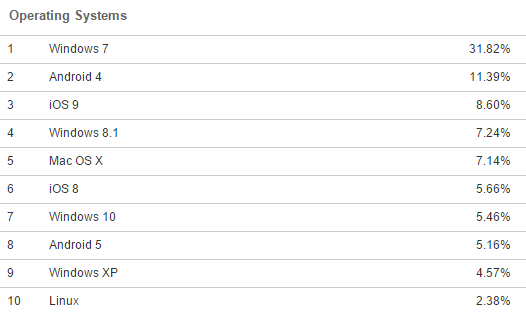
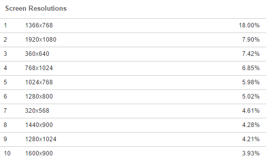

4 Hardware and Software
Designers are rarely free to do whatever comes to mind. Just as designers consider their users’ needs for specific information, they must also consider any constraints imposed on them by their users’ hardware, software, and speed of connection to the Internet. Today, a single operating system (Microsoft’s XP) dominates personal computer market. Similarly, only two Web site browsers are favored by the vast majority of users. More than ninety percent of users have their monitors set to 1024x768, 800x600 or 1280x1024 pixel resolution. And while most users at work have high-speed Internet access, many home users still connect using dial-up.
Within the constraints of available time, money, and resources, it is usually impossible to design for all users. Therefore, identify the hardware and software used by your primary and secondary audiences and design to maximize the effectiveness of your Web site.
4.1 Design for common browsers (4:2)
Design for YOUR audience first, design, develop and test for the most common browsers second.
Designers should attempt to accommodate ninety-five percent of all users. Ensure that all testing of a Web site is done using the most popular browsers. Sources of information about the most commonly used browsers:

Sources:
4.2 Account for browser differences (4:2)
Do not assume that all users will have the same browser features, and will have set the same defaults.
Users with visual impairments tend to select larger fonts, and some users may turn off backgrounds, use fewer colors, or overrides font. The designer should find out what settings most users are using, and specify on the Web site exactly what assumptions were made about the browser settings.
4.3 Design for popular operating systems (4:2)
Design the Web site so it will work well with the most popular operating systems.
Designers should attempt to accommodate ninety-five percent of all users. Ensure that all testing of a Web site is done using the most common operating systems.

Sources:
4.4 Design for the user's typical connection speed (3:2)
Design for YOUR audience first, for the connection speed of most users second.
At work in the United States, at least eighty-nine percent of users have high speed access, while less than eleven percent are using fifty-six K (or slower) modems. At home, more than two-thirds of users have high speed access. These figures are continually changing. Designers should consult one of the several sources that maintain current figures.
Sources:
4.5 Design for common screen resolutions (3:2)
Design for YOUR audience first, masses second.
Google dictates the ebb and flow of online commerce and they’ve just dictated you need to design for a good experience across multiple devices IF you want to rank well in Google. (http://googlewebmastercentral.blogspot.com.es/2015/02/finding-more-mobile-friendly-search.html)
At the moment – that essentially now means responsive website design.
That could mean yes: design for a 1024×768 setting (for instance) BUT ALSO ensure it also looks good, or ‘transforms gracefully’, to the 800×600 setting, for example, or even smaller.
MOBILE IS ON THE RISE, so if developing a new website in 2015, you MUST think about how mobile friendly your website really is from the start.
Your pages should work at any resolution. Jakob Nielsen is on record as recommending:
Optimise for 1024×768, which was the most widely used screen size for a long time. Of course, the general guideline is to optimise for your target audience’s most common resolution, so size will change in the future. It might even be a different size now, if, say, you’re designing an intranet for a company that gives all employees new big monitors.
Do not design solely for a specific monitor size unless you have been specifically commissioned to do so – because screen sizes vary among users. Window size variability is even greater, since users don’t always maximise their browsers (especially if they have large screens).
Use a liquid layout that stretches to the current user’s window size (that is, avoid frozen layouts that are always the same size).

Sources: